Los padres de la joven , que vive en Uruguay , fueron víctimas de Videla.
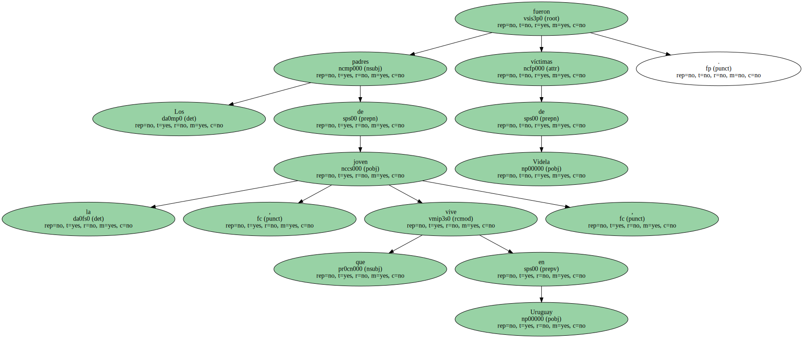Después de una larga odisea , el poeta argentino Juan Gelman ha conseguido realizar su sueño : encontrar a su nieta , desaparecida en 1976 , al principio de la dictadura militar del general Videla.

El presidente uruguayo , Jorge Batlle , confirmó ayer que la nieta de Gelman , hija de desaparecidos , fue hallada en Montevideo.
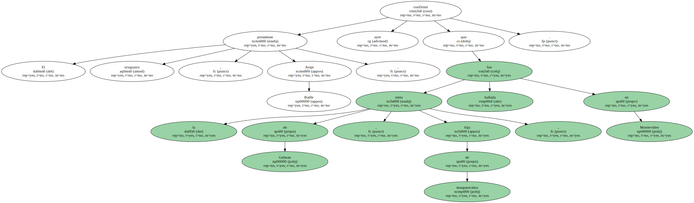Gelman , que se entrevistó con el presidente uruguayo antes de que éste hiciera pública la noticia , ha recibido el apoyo de más de 160 intelectuales de 70 países en su intento de seguir las huellas de la joven.
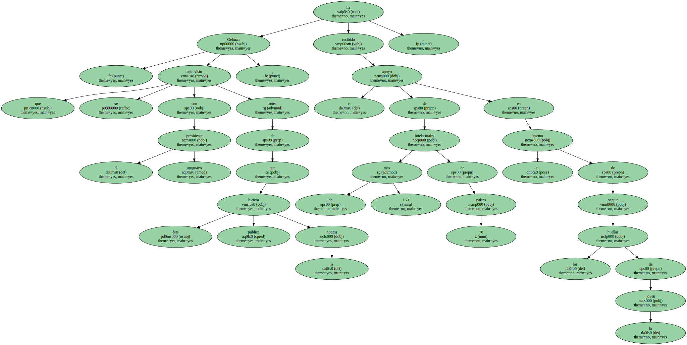Batlle aseguró que el poeta argentino por fin " ha podido encontrar a la persona , que cree con toda seguridad que es su nieta ".
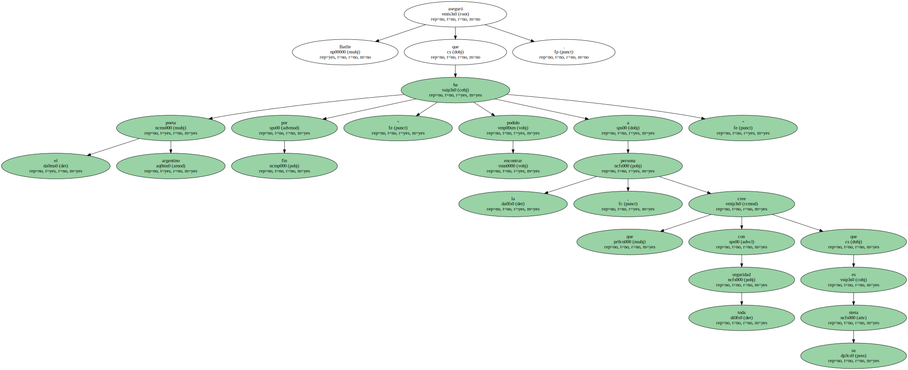El presidente uruguayo añadió que se llevarán a cabo exámenes médicos para confirmar que existe una relación de parentesco entre la chica , que en la actualidad tiene 24 años , y el célebre poeta.
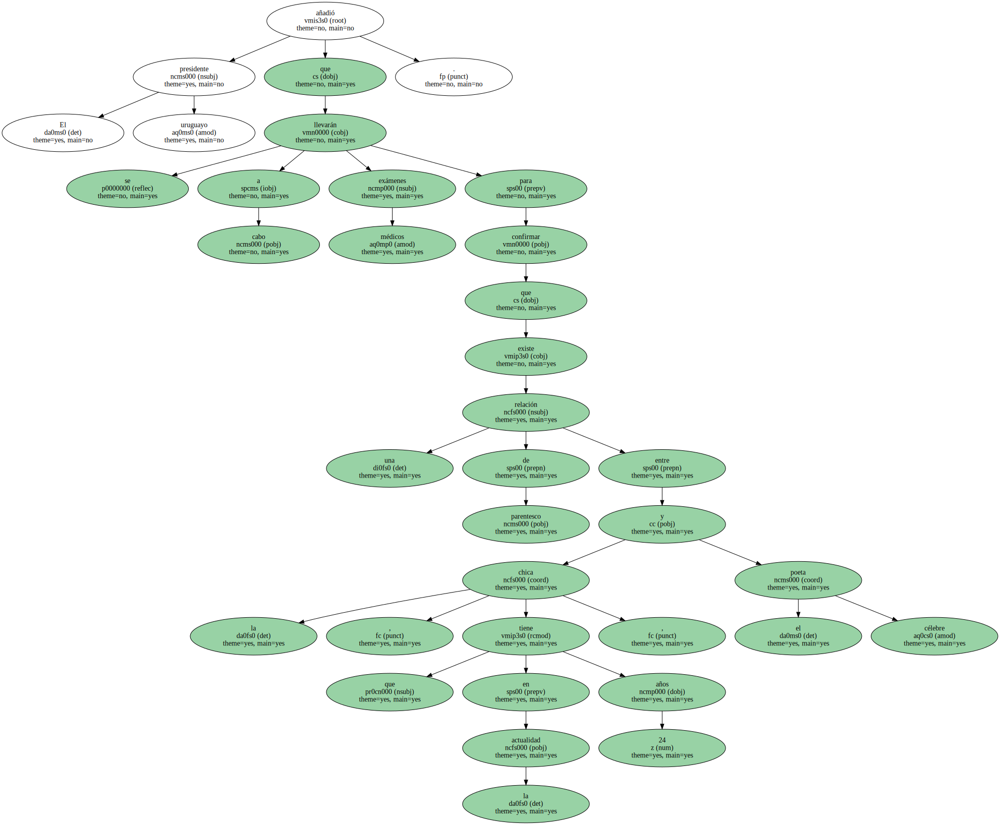Gelman había intentado en vano que el predecesor de Batlle , Julio Maria Sanguinetti , le brindara su colaboración para encontrar a su nieta.
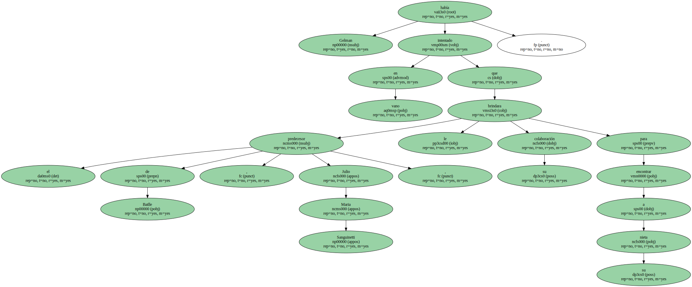El poeta , en una carta abierta , le reclamó su apoyo.
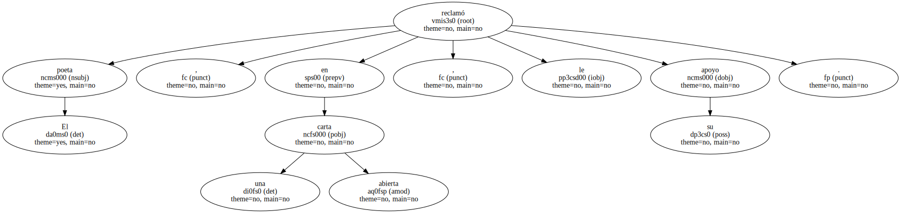En aquella misiva , Gelman explicó que su nuera María Claudia García fue detenida en agosto de 1976 , cuando estaba embarazada.
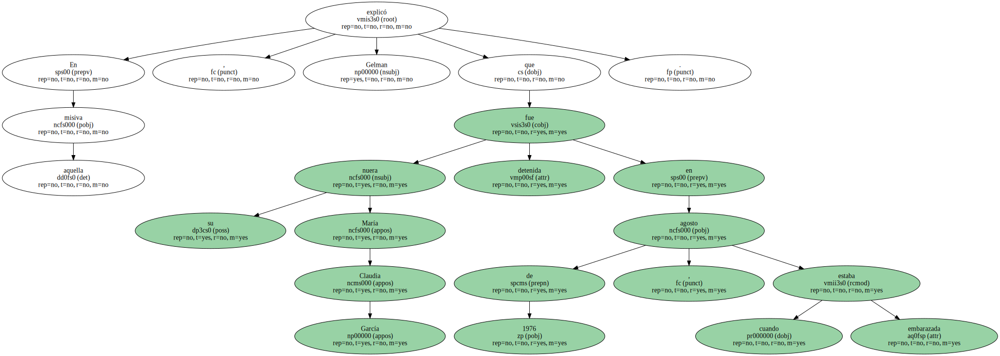Después fue encarcelada en un centro clandestino de Buenos Aires y trasladada a un hospital de Montevideo.

Su hijo también fue asesinado.
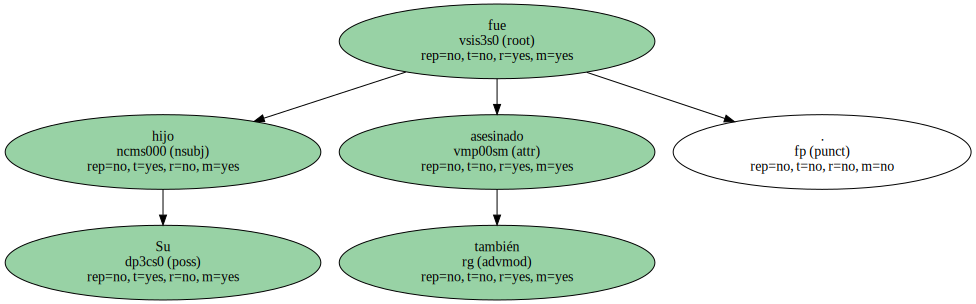El hijo de Gelman , Marcelo , también fue detenido durante la dictadura argentina.

Su cadáver no le fue devuelto hasta 1998.

Gelman , que inició la búsqueda desesperada de su nieta en 1976 intentará reencontrarse con ella en la intimidad.
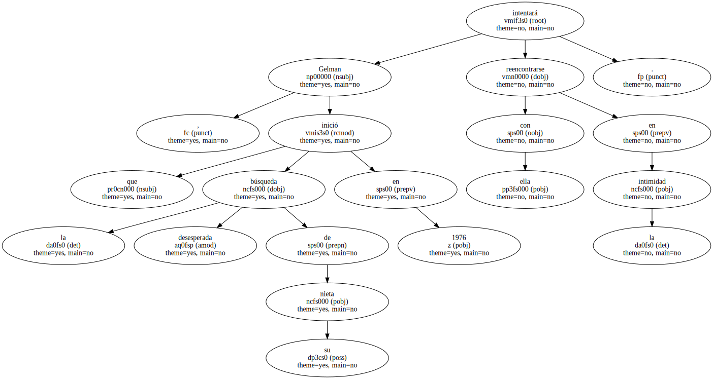Según el poeta , " la persona que busco nació en Uruguay , vive en Uruguay y es muy querida por sus padres adoptivos ".
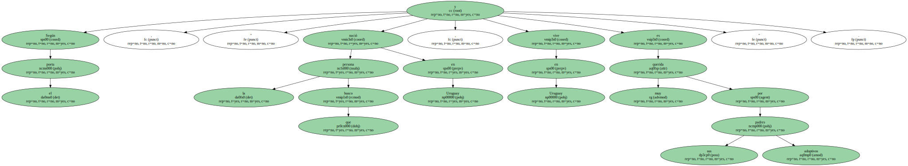La búsqueda de Gelman despertó una amplia solidaridad internacional tras la negativa del ex presidente uruguayo Sanguinetti a aportar datos al poeta sobre el paradero de su nieta.
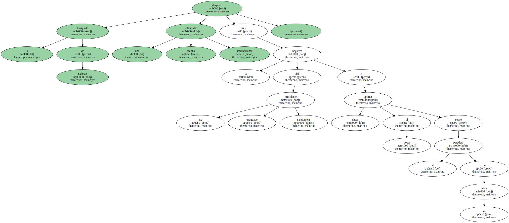Sanguinetti , poco antes del traspaso de poderes , se limitó a decir que " ningún niño ha desaparecido en Uruguay ".

Según estimaciones de familiares de las víctimas de la represión militar , 141 uruguayos desaparecieron , entre ellos siete menores , como consecuencia del Plan Cóndor , puesto en práctica por las dictaduras suramericanas para librarse de la oposición.
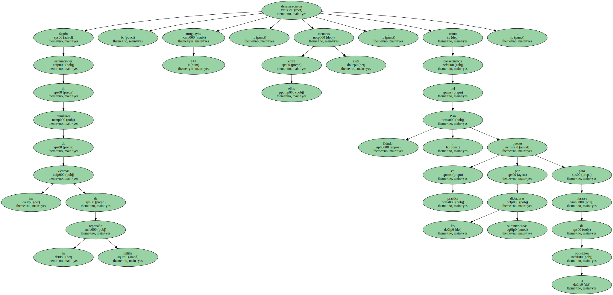La noticia del hallazgo de la nieta de Gelman ha provocado una auténtica conmoción en Uruguay , ya que es la primera vez que un presidente asume el problema de los desaparecidos.
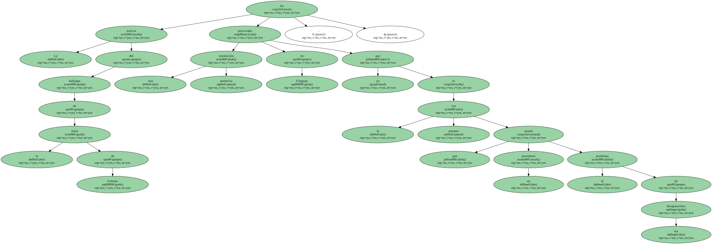